Overall status: FAIL (206 issues)
| Component | Status / Issue |
|---|---|
| EAM | tape3 missing coarsened field: T_1..T_8 |
| EAM | tape3 missing coarsened field: Q_1..Q_8 |
| EAM | tape3 missing coarsened field: U_1..U_8 |
| EAM | tape3 missing coarsened field: V_1..V_8 |
| EAM | tape3 missing coarsened field: OMEGA_1..OMEGA_8 |
| EAM | tape3 missing coarsened field: CLDLIQ_1..CLDLIQ_8 |
| EAM | tape3 missing coarsened field: CLDICE_1..CLDICE_8 |
| EAM | tape3 missing coarsened field: RAINQM_1..RAINQM_8 |
| EAM | tape3 missing coarsened field: TOTAL_WATER_1..TOTAL_WATER_8 |
| MPAS-O Depth Coarsening (native) | temperatureCoarsened: 465044 depth layers, expected 19 |
| MPAS-O Depth Coarsening (native) | salinityCoarsened: 465044 depth layers, expected 19 |
| MPAS-O Depth Coarsening (native) | salinityCoarsened: max=49.99 above 42 |
| MPAS-O Depth Coarsening (native) | velocityZonalCoarsened: 465044 depth layers, expected 19 |
| MPAS-O Depth Coarsening (native) | velocityMeridionalCoarsened: 465044 depth layers, expected 19 |
| MPAS-O Depth Coarsening (native) | layerThicknessCoarsened: 465044 depth layers, expected 19 |
| MPAS-O Depth Coarsening (remapped) | remapped/temperatureCoarsened_0: min=-9.823e+14 below -5 |
| MPAS-O Depth Coarsening (remapped) | remapped/temperatureCoarsened_0: max=9.941e+14 above 40 |
| MPAS-O Depth Coarsening (remapped) | remapped/temperatureCoarsened_1: min=-9.952e+14 below -5 |
| MPAS-O Depth Coarsening (remapped) | remapped/temperatureCoarsened_1: max=9.948e+14 above 40 |
| MPAS-O Depth Coarsening (remapped) | remapped/temperatureCoarsened_2: min=-9.965e+14 below -5 |
| MPAS-O Depth Coarsening (remapped) | remapped/temperatureCoarsened_2: max=9.941e+14 above 40 |
| MPAS-O Depth Coarsening (remapped) | remapped/temperatureCoarsened_3: min=-9.961e+14 below -5 |
| MPAS-O Depth Coarsening (remapped) | remapped/temperatureCoarsened_3: max=9.922e+14 above 40 |
| MPAS-O Depth Coarsening (remapped) | remapped/temperatureCoarsened_4: min=-9.965e+14 below -5 |
| MPAS-O Depth Coarsening (remapped) | remapped/temperatureCoarsened_4: max=9.998e+14 above 40 |
| MPAS-O Depth Coarsening (remapped) | remapped/temperatureCoarsened_5: min=-9.881e+14 below -5 |
| MPAS-O Depth Coarsening (remapped) | remapped/temperatureCoarsened_5: max=9.929e+14 above 40 |
| MPAS-O Depth Coarsening (remapped) | remapped/temperatureCoarsened_6: min=-9.946e+14 below -5 |
| MPAS-O Depth Coarsening (remapped) | remapped/temperatureCoarsened_6: max=9.861e+14 above 40 |
| MPAS-O Depth Coarsening (remapped) | remapped/temperatureCoarsened_7: min=-9.998e+14 below -5 |
| MPAS-O Depth Coarsening (remapped) | remapped/temperatureCoarsened_7: max=9.978e+14 above 40 |
| MPAS-O Depth Coarsening (remapped) | remapped/temperatureCoarsened_8: min=-9.975e+14 below -5 |
| MPAS-O Depth Coarsening (remapped) | remapped/temperatureCoarsened_8: max=9.924e+14 above 40 |
| MPAS-O Depth Coarsening (remapped) | remapped/temperatureCoarsened_9: min=-9.946e+14 below -5 |
| MPAS-O Depth Coarsening (remapped) | remapped/temperatureCoarsened_9: max=9.965e+14 above 40 |
| MPAS-O Depth Coarsening (remapped) | remapped/temperatureCoarsened_10: min=-9.987e+14 below -5 |
| MPAS-O Depth Coarsening (remapped) | remapped/temperatureCoarsened_10: max=9.926e+14 above 40 |
| MPAS-O Depth Coarsening (remapped) | remapped/temperatureCoarsened_11: min=-9.953e+14 below -5 |
| MPAS-O Depth Coarsening (remapped) | remapped/temperatureCoarsened_11: max=9.997e+14 above 40 |
| MPAS-O Depth Coarsening (remapped) | remapped/temperatureCoarsened_12: min=-9.949e+14 below -5 |
| MPAS-O Depth Coarsening (remapped) | remapped/temperatureCoarsened_12: max=9.98e+14 above 40 |
| MPAS-O Depth Coarsening (remapped) | remapped/temperatureCoarsened_13: min=-9.7e+14 below -5 |
| MPAS-O Depth Coarsening (remapped) | remapped/temperatureCoarsened_13: max=9.899e+14 above 40 |
| MPAS-O Depth Coarsening (remapped) | remapped/temperatureCoarsened_14: min=-9.915e+14 below -5 |
| MPAS-O Depth Coarsening (remapped) | remapped/temperatureCoarsened_14: max=9.956e+14 above 40 |
| MPAS-O Depth Coarsening (remapped) | remapped/temperatureCoarsened_15: min=-9.925e+14 below -5 |
| MPAS-O Depth Coarsening (remapped) | remapped/temperatureCoarsened_15: max=9.914e+14 above 40 |
| MPAS-O Depth Coarsening (remapped) | remapped/temperatureCoarsened_16: min=-9.934e+14 below -5 |
| MPAS-O Depth Coarsening (remapped) | remapped/temperatureCoarsened_16: max=9.915e+14 above 40 |
| MPAS-O Depth Coarsening (remapped) | remapped/temperatureCoarsened_17: min=-9.898e+14 below -5 |
| MPAS-O Depth Coarsening (remapped) | remapped/temperatureCoarsened_17: max=9.88e+14 above 40 |
| MPAS-O Depth Coarsening (remapped) | remapped/temperatureCoarsened_18: min=-9.929e+14 below -5 |
| MPAS-O Depth Coarsening (remapped) | remapped/temperatureCoarsened_18: max=9.987e+14 above 40 |
| MPAS-O Depth Coarsening (remapped) | remapped/salinityCoarsened_0: min=-9.912e+14 below 0 |
| MPAS-O Depth Coarsening (remapped) | remapped/salinityCoarsened_0: max=9.793e+14 above 42 |
| MPAS-O Depth Coarsening (remapped) | remapped/salinityCoarsened_1: min=-9.897e+14 below 0 |
| MPAS-O Depth Coarsening (remapped) | remapped/salinityCoarsened_1: max=9.702e+14 above 42 |
| MPAS-O Depth Coarsening (remapped) | remapped/salinityCoarsened_2: min=-9.998e+14 below 0 |
| MPAS-O Depth Coarsening (remapped) | remapped/salinityCoarsened_2: max=9.966e+14 above 42 |
| MPAS-O Depth Coarsening (remapped) | remapped/salinityCoarsened_3: min=-9.957e+14 below 0 |
| MPAS-O Depth Coarsening (remapped) | remapped/salinityCoarsened_3: max=9.876e+14 above 42 |
| MPAS-O Depth Coarsening (remapped) | remapped/salinityCoarsened_4: min=-9.857e+14 below 0 |
| MPAS-O Depth Coarsening (remapped) | remapped/salinityCoarsened_4: max=9.983e+14 above 42 |
| MPAS-O Depth Coarsening (remapped) | remapped/salinityCoarsened_5: min=-9.979e+14 below 0 |
| MPAS-O Depth Coarsening (remapped) | remapped/salinityCoarsened_5: max=9.906e+14 above 42 |
| MPAS-O Depth Coarsening (remapped) | remapped/salinityCoarsened_6: min=-9.946e+14 below 0 |
| MPAS-O Depth Coarsening (remapped) | remapped/salinityCoarsened_6: max=9.881e+14 above 42 |
| MPAS-O Depth Coarsening (remapped) | remapped/salinityCoarsened_7: min=-9.946e+14 below 0 |
| MPAS-O Depth Coarsening (remapped) | remapped/salinityCoarsened_7: max=9.863e+14 above 42 |
| MPAS-O Depth Coarsening (remapped) | remapped/salinityCoarsened_8: min=-9.946e+14 below 0 |
| MPAS-O Depth Coarsening (remapped) | remapped/salinityCoarsened_8: max=9.967e+14 above 42 |
| MPAS-O Depth Coarsening (remapped) | remapped/salinityCoarsened_9: min=-9.946e+14 below 0 |
| MPAS-O Depth Coarsening (remapped) | remapped/salinityCoarsened_9: max=9.966e+14 above 42 |
| MPAS-O Depth Coarsening (remapped) | remapped/salinityCoarsened_10: min=-9.868e+14 below 0 |
| MPAS-O Depth Coarsening (remapped) | remapped/salinityCoarsened_10: max=9.983e+14 above 42 |
| MPAS-O Depth Coarsening (remapped) | remapped/salinityCoarsened_11: min=-9.825e+14 below 0 |
| MPAS-O Depth Coarsening (remapped) | remapped/salinityCoarsened_11: max=9.946e+14 above 42 |
| MPAS-O Depth Coarsening (remapped) | remapped/salinityCoarsened_12: min=-9.963e+14 below 0 |
| MPAS-O Depth Coarsening (remapped) | remapped/salinityCoarsened_12: max=9.852e+14 above 42 |
| MPAS-O Depth Coarsening (remapped) | remapped/salinityCoarsened_13: min=-9.756e+14 below 0 |
| MPAS-O Depth Coarsening (remapped) | remapped/salinityCoarsened_13: max=9.974e+14 above 42 |
| MPAS-O Depth Coarsening (remapped) | remapped/salinityCoarsened_14: min=-9.906e+14 below 0 |
| MPAS-O Depth Coarsening (remapped) | remapped/salinityCoarsened_14: max=9.811e+14 above 42 |
| MPAS-O Depth Coarsening (remapped) | remapped/salinityCoarsened_15: min=-9.928e+14 below 0 |
| MPAS-O Depth Coarsening (remapped) | remapped/salinityCoarsened_15: max=9.896e+14 above 42 |
| MPAS-O Depth Coarsening (remapped) | remapped/salinityCoarsened_16: min=-9.901e+14 below 0 |
| MPAS-O Depth Coarsening (remapped) | remapped/salinityCoarsened_16: max=9.811e+14 above 42 |
| MPAS-O Depth Coarsening (remapped) | remapped/salinityCoarsened_17: min=-9.747e+14 below 0 |
| MPAS-O Depth Coarsening (remapped) | remapped/salinityCoarsened_17: max=9.915e+14 above 42 |
| MPAS-O Depth Coarsening (remapped) | remapped/salinityCoarsened_18: min=-9.831e+14 below 0 |
| MPAS-O Depth Coarsening (remapped) | remapped/salinityCoarsened_18: max=9.972e+14 above 42 |
| MPAS-O Depth Coarsening (remapped) | remapped/velocityZonalCoarsened_0: min=-9.985e+14 below -5 |
| MPAS-O Depth Coarsening (remapped) | remapped/velocityZonalCoarsened_0: max=9.957e+14 above 5 |
| MPAS-O Depth Coarsening (remapped) | remapped/velocityZonalCoarsened_1: min=-9.985e+14 below -5 |
| MPAS-O Depth Coarsening (remapped) | remapped/velocityZonalCoarsened_1: max=9.918e+14 above 5 |
| MPAS-O Depth Coarsening (remapped) | remapped/velocityZonalCoarsened_2: min=-9.956e+14 below -5 |
| MPAS-O Depth Coarsening (remapped) | remapped/velocityZonalCoarsened_2: max=9.938e+14 above 5 |
| MPAS-O Depth Coarsening (remapped) | remapped/velocityZonalCoarsened_3: min=-9.858e+14 below -5 |
| MPAS-O Depth Coarsening (remapped) | remapped/velocityZonalCoarsened_3: max=9.981e+14 above 5 |
| MPAS-O Depth Coarsening (remapped) | remapped/velocityZonalCoarsened_4: min=-9.992e+14 below -5 |
| MPAS-O Depth Coarsening (remapped) | remapped/velocityZonalCoarsened_4: max=9.994e+14 above 5 |
| MPAS-O Depth Coarsening (remapped) | remapped/velocityZonalCoarsened_5: min=-9.766e+14 below -5 |
| MPAS-O Depth Coarsening (remapped) | remapped/velocityZonalCoarsened_5: max=9.972e+14 above 5 |
| MPAS-O Depth Coarsening (remapped) | remapped/velocityZonalCoarsened_6: min=-9.946e+14 below -5 |
| MPAS-O Depth Coarsening (remapped) | remapped/velocityZonalCoarsened_6: max=9.892e+14 above 5 |
| MPAS-O Depth Coarsening (remapped) | remapped/velocityZonalCoarsened_7: min=-9.953e+14 below -5 |
| MPAS-O Depth Coarsening (remapped) | remapped/velocityZonalCoarsened_7: max=9.998e+14 above 5 |
| MPAS-O Depth Coarsening (remapped) | remapped/velocityZonalCoarsened_8: min=-9.946e+14 below -5 |
| MPAS-O Depth Coarsening (remapped) | remapped/velocityZonalCoarsened_8: max=9.936e+14 above 5 |
| MPAS-O Depth Coarsening (remapped) | remapped/velocityZonalCoarsened_9: min=-9.994e+14 below -5 |
| MPAS-O Depth Coarsening (remapped) | remapped/velocityZonalCoarsened_9: max=9.915e+14 above 5 |
| MPAS-O Depth Coarsening (remapped) | remapped/velocityZonalCoarsened_10: min=-9.903e+14 below -5 |
| MPAS-O Depth Coarsening (remapped) | remapped/velocityZonalCoarsened_10: max=9.958e+14 above 5 |
| MPAS-O Depth Coarsening (remapped) | remapped/velocityZonalCoarsened_11: min=-9.961e+14 below -5 |
| MPAS-O Depth Coarsening (remapped) | remapped/velocityZonalCoarsened_11: max=9.96e+14 above 5 |
| MPAS-O Depth Coarsening (remapped) | remapped/velocityZonalCoarsened_12: min=-9.996e+14 below -5 |
| MPAS-O Depth Coarsening (remapped) | remapped/velocityZonalCoarsened_12: max=9.913e+14 above 5 |
| MPAS-O Depth Coarsening (remapped) | remapped/velocityZonalCoarsened_13: min=-9.92e+14 below -5 |
| MPAS-O Depth Coarsening (remapped) | remapped/velocityZonalCoarsened_13: max=9.88e+14 above 5 |
| MPAS-O Depth Coarsening (remapped) | remapped/velocityZonalCoarsened_14: min=-9.862e+14 below -5 |
| MPAS-O Depth Coarsening (remapped) | remapped/velocityZonalCoarsened_14: max=9.811e+14 above 5 |
| MPAS-O Depth Coarsening (remapped) | remapped/velocityZonalCoarsened_15: min=-9.846e+14 below -5 |
| MPAS-O Depth Coarsening (remapped) | remapped/velocityZonalCoarsened_15: max=9.933e+14 above 5 |
| MPAS-O Depth Coarsening (remapped) | remapped/velocityZonalCoarsened_16: min=-9.897e+14 below -5 |
| MPAS-O Depth Coarsening (remapped) | remapped/velocityZonalCoarsened_16: max=9.962e+14 above 5 |
| MPAS-O Depth Coarsening (remapped) | remapped/velocityZonalCoarsened_17: min=-9.453e+14 below -5 |
| MPAS-O Depth Coarsening (remapped) | remapped/velocityZonalCoarsened_17: max=9.842e+14 above 5 |
| MPAS-O Depth Coarsening (remapped) | remapped/velocityZonalCoarsened_18: min=-9.967e+14 below -5 |
| MPAS-O Depth Coarsening (remapped) | remapped/velocityZonalCoarsened_18: max=9.969e+14 above 5 |
| MPAS-O Depth Coarsening (remapped) | remapped/velocityMeridionalCoarsened_0: min=-9.967e+14 below -5 |
| MPAS-O Depth Coarsening (remapped) | remapped/velocityMeridionalCoarsened_0: max=9.87e+14 above 5 |
| MPAS-O Depth Coarsening (remapped) | remapped/velocityMeridionalCoarsened_1: min=-9.959e+14 below -5 |
| MPAS-O Depth Coarsening (remapped) | remapped/velocityMeridionalCoarsened_1: max=9.971e+14 above 5 |
| MPAS-O Depth Coarsening (remapped) | remapped/velocityMeridionalCoarsened_2: min=-9.989e+14 below -5 |
| MPAS-O Depth Coarsening (remapped) | remapped/velocityMeridionalCoarsened_2: max=9.998e+14 above 5 |
| MPAS-O Depth Coarsening (remapped) | remapped/velocityMeridionalCoarsened_3: min=-9.973e+14 below -5 |
| MPAS-O Depth Coarsening (remapped) | remapped/velocityMeridionalCoarsened_3: max=9.97e+14 above 5 |
| MPAS-O Depth Coarsening (remapped) | remapped/velocityMeridionalCoarsened_4: min=-9.978e+14 below -5 |
| MPAS-O Depth Coarsening (remapped) | remapped/velocityMeridionalCoarsened_4: max=9.966e+14 above 5 |
| MPAS-O Depth Coarsening (remapped) | remapped/velocityMeridionalCoarsened_5: min=-9.999e+14 below -5 |
| MPAS-O Depth Coarsening (remapped) | remapped/velocityMeridionalCoarsened_5: max=9.991e+14 above 5 |
| MPAS-O Depth Coarsening (remapped) | remapped/velocityMeridionalCoarsened_6: min=-9.946e+14 below -5 |
| MPAS-O Depth Coarsening (remapped) | remapped/velocityMeridionalCoarsened_6: max=9.916e+14 above 5 |
| MPAS-O Depth Coarsening (remapped) | remapped/velocityMeridionalCoarsened_7: min=-1e+15 below -5 |
| MPAS-O Depth Coarsening (remapped) | remapped/velocityMeridionalCoarsened_7: max=9.966e+14 above 5 |
| MPAS-O Depth Coarsening (remapped) | remapped/velocityMeridionalCoarsened_8: min=-9.979e+14 below -5 |
| MPAS-O Depth Coarsening (remapped) | remapped/velocityMeridionalCoarsened_8: max=9.811e+14 above 5 |
| MPAS-O Depth Coarsening (remapped) | remapped/velocityMeridionalCoarsened_9: min=-9.946e+14 below -5 |
| MPAS-O Depth Coarsening (remapped) | remapped/velocityMeridionalCoarsened_9: max=9.964e+14 above 5 |
| MPAS-O Depth Coarsening (remapped) | remapped/velocityMeridionalCoarsened_10: min=-9.955e+14 below -5 |
| MPAS-O Depth Coarsening (remapped) | remapped/velocityMeridionalCoarsened_10: max=9.927e+14 above 5 |
| MPAS-O Depth Coarsening (remapped) | remapped/velocityMeridionalCoarsened_11: min=-9.98e+14 below -5 |
| MPAS-O Depth Coarsening (remapped) | remapped/velocityMeridionalCoarsened_11: max=9.916e+14 above 5 |
| MPAS-O Depth Coarsening (remapped) | remapped/velocityMeridionalCoarsened_12: min=-9.903e+14 below -5 |
| MPAS-O Depth Coarsening (remapped) | remapped/velocityMeridionalCoarsened_12: max=9.999e+14 above 5 |
| MPAS-O Depth Coarsening (remapped) | remapped/velocityMeridionalCoarsened_13: min=-9.997e+14 below -5 |
| MPAS-O Depth Coarsening (remapped) | remapped/velocityMeridionalCoarsened_13: max=9.898e+14 above 5 |
| MPAS-O Depth Coarsening (remapped) | remapped/velocityMeridionalCoarsened_14: min=-9.938e+14 below -5 |
| MPAS-O Depth Coarsening (remapped) | remapped/velocityMeridionalCoarsened_14: max=9.961e+14 above 5 |
| MPAS-O Depth Coarsening (remapped) | remapped/velocityMeridionalCoarsened_15: min=-9.998e+14 below -5 |
| MPAS-O Depth Coarsening (remapped) | remapped/velocityMeridionalCoarsened_15: max=9.978e+14 above 5 |
| MPAS-O Depth Coarsening (remapped) | remapped/velocityMeridionalCoarsened_16: min=-9.921e+14 below -5 |
| MPAS-O Depth Coarsening (remapped) | remapped/velocityMeridionalCoarsened_16: max=9.894e+14 above 5 |
| MPAS-O Depth Coarsening (remapped) | remapped/velocityMeridionalCoarsened_17: min=-9.776e+14 below -5 |
| MPAS-O Depth Coarsening (remapped) | remapped/velocityMeridionalCoarsened_17: max=9.811e+14 above 5 |
| MPAS-O Depth Coarsening (remapped) | remapped/velocityMeridionalCoarsened_18: min=-9.831e+14 below -5 |
| MPAS-O Depth Coarsening (remapped) | remapped/velocityMeridionalCoarsened_18: max=9.969e+14 above 5 |
| MPAS-O Depth Coarsening (remapped) | remapped/layerThicknessCoarsened_0: min=-9.61e+14 below 0 |
| MPAS-O Depth Coarsening (remapped) | remapped/layerThicknessCoarsened_1: min=-9.61e+14 below 0 |
| MPAS-O Depth Coarsening (remapped) | remapped/layerThicknessCoarsened_2: min=-9.61e+14 below 0 |
| MPAS-O Depth Coarsening (remapped) | remapped/layerThicknessCoarsened_3: min=-9.61e+14 below 0 |
| MPAS-O Depth Coarsening (remapped) | remapped/layerThicknessCoarsened_4: min=-9.586e+14 below 0 |
| MPAS-O Depth Coarsening (remapped) | remapped/layerThicknessCoarsened_5: min=-9.222e+14 below 0 |
| MPAS-O Depth Coarsening (remapped) | remapped/layerThicknessCoarsened_6: min=-9.946e+14 below 0 |
| MPAS-O Depth Coarsening (remapped) | remapped/layerThicknessCoarsened_7: min=-9.946e+14 below 0 |
| MPAS-O Depth Coarsening (remapped) | remapped/layerThicknessCoarsened_8: min=-9.946e+14 below 0 |
| MPAS-O Depth Coarsening (remapped) | remapped/layerThicknessCoarsened_9: min=-9.946e+14 below 0 |
| MPAS-O Depth Coarsening (remapped) | remapped/layerThicknessCoarsened_10: min=-8.576e+14 below 0 |
| MPAS-O Depth Coarsening (remapped) | remapped/layerThicknessCoarsened_11: min=-8.688e+14 below 0 |
| MPAS-O Depth Coarsening (remapped) | remapped/layerThicknessCoarsened_12: min=-9.7e+14 below 0 |
| MPAS-O Depth Coarsening (remapped) | remapped/layerThicknessCoarsened_13: min=-9.7e+14 below 0 |
| MPAS-O Depth Coarsening (remapped) | remapped/layerThicknessCoarsened_14: min=-9.862e+14 below 0 |
| MPAS-O Depth Coarsening (remapped) | remapped/layerThicknessCoarsened_15: min=-8.997e+14 below 0 |
| MPAS-O Depth Coarsening (remapped) | remapped/layerThicknessCoarsened_16: min=-9.769e+14 below 0 |
| MPAS-O Depth Coarsening (remapped) | remapped/layerThicknessCoarsened_17: min=-9.832e+14 below 0 |
| MPAS-O Depth Coarsening (remapped) | remapped/layerThicknessCoarsened_18: min=-9.831e+14 below 0 |
| MPAS-O Derived Fields (native) | surfaceHeatFluxTotal: min=-1784 below -1000 |
| MPAS-O Derived Fields (native) | surfaceHeatFluxTotal: max=1454 above 1000 |
| MPAS-O Derived Fields (remapped) | remapped/sst: min=-9.943e+14 below -5 |
| MPAS-O Derived Fields (remapped) | remapped/sst: max=9.972e+14 above 40 |
| MPAS-O Derived Fields (remapped) | remapped/sss: min=-9.933e+14 below 0 |
| MPAS-O Derived Fields (remapped) | remapped/sss: max=9.982e+14 above 42 |
| MPAS-O Derived Fields (remapped) | remapped/surfaceHeatFluxTotal: min=-9.95e+14 below -1000 |
| MPAS-O Derived Fields (remapped) | remapped/surfaceHeatFluxTotal: max=9.977e+14 above 1000 |
| MPAS-O Vertical Reduce (native) | PASS |
| MPAS-O Vertical Reduce (remapped) | remapped/freshwaterContent: min=-9.976e+14 below -1000 |
| MPAS-O Vertical Reduce (remapped) | remapped/freshwaterContent: max=9.983e+14 above 1000 |
| MPAS-O Vertical Reduce (remapped) | remapped/kineticEnergy: min=-9.967e+14 below 0 |
| MPAS-SI Derived Fields (native) | snowVolumeTotal: min=-3.434e-30 below 0 |
| MPAS-SI Derived Fields (native) | surfaceTemperatureMean: min=-41.44 below 180 |
| MPAS-SI Derived Fields (remapped) | remapped/iceAreaTotal: min=-9.296e+14 below 0 |
| MPAS-SI Derived Fields (remapped) | remapped/iceAreaTotal: max=8.829e+14 above 1 |
| MPAS-SI Derived Fields (remapped) | remapped/iceVolumeTotal: min=-9.628e+14 below 0 |
| MPAS-SI Derived Fields (remapped) | remapped/snowVolumeTotal: min=-9.536e+14 below 0 |
| MPAS-SI Derived Fields (remapped) | remapped/iceThicknessMean: min=-9.42e+14 below 0 |
| MPAS-SI Derived Fields (remapped) | remapped/surfaceTemperatureMean: min=-9.013e+14 below 180 |
| MPAS-SI Derived Fields (remapped) | remapped/surfaceTemperatureMean: max=9.704e+14 above 320 |
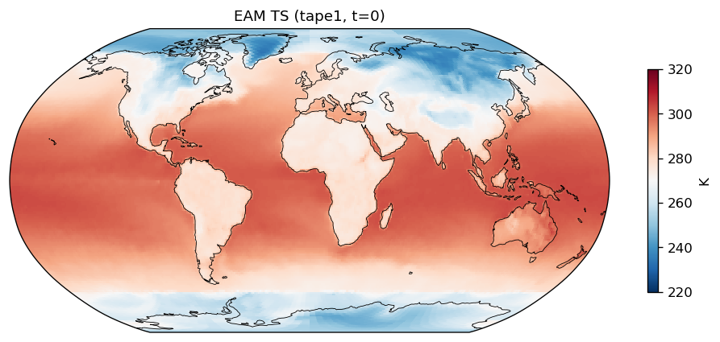
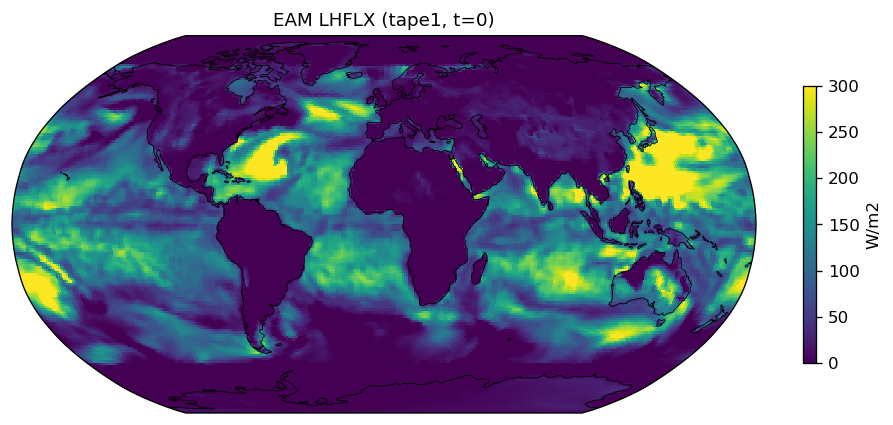
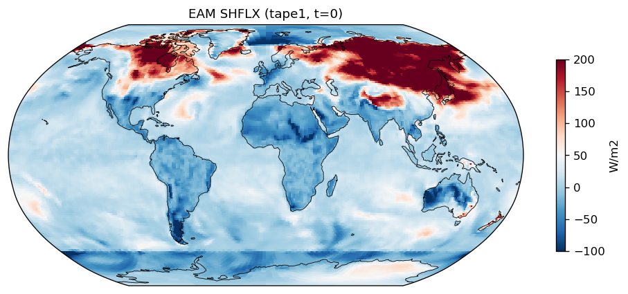
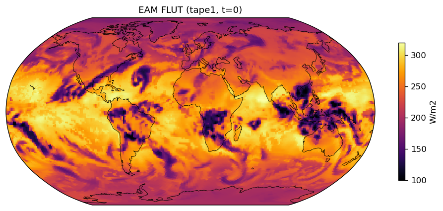
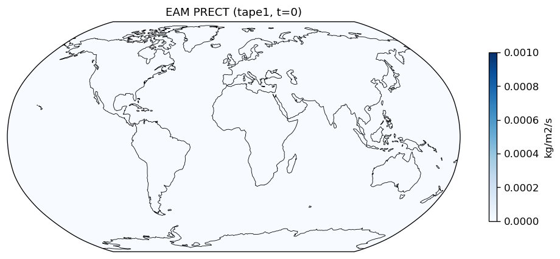
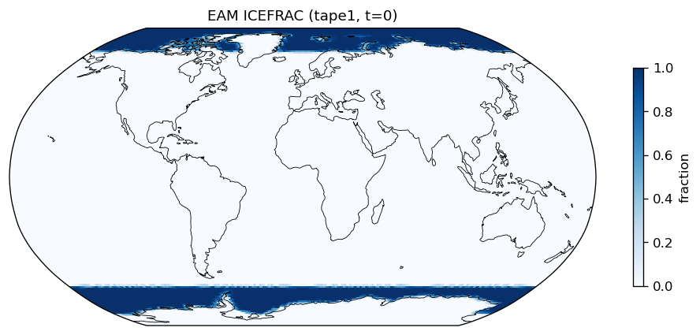
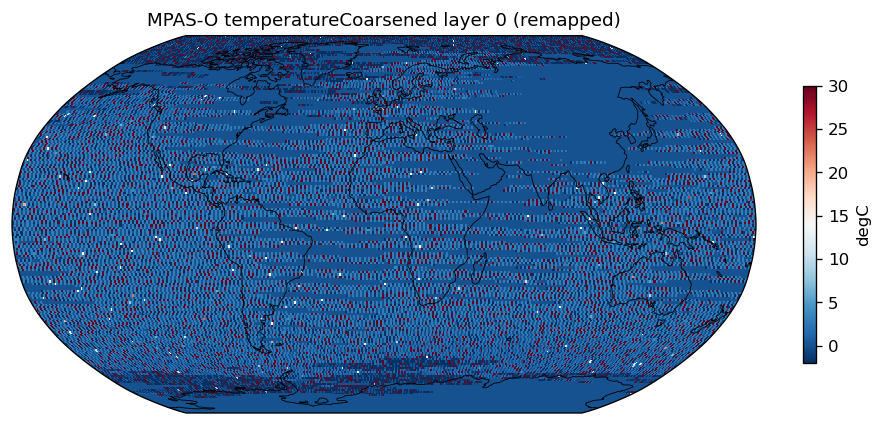
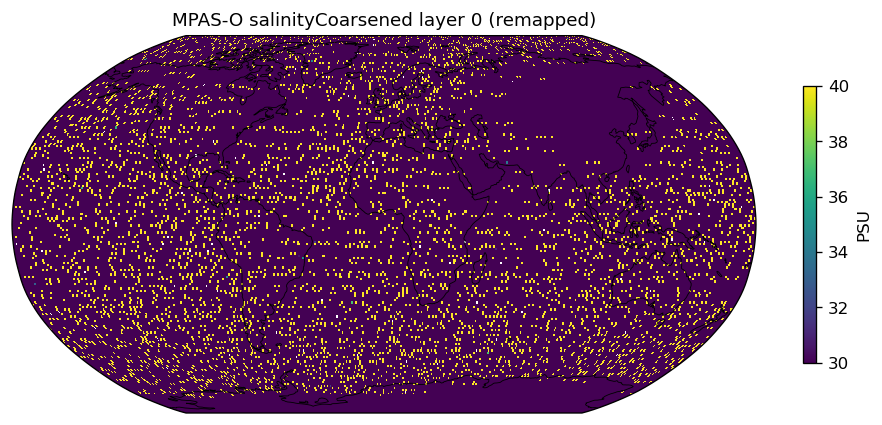
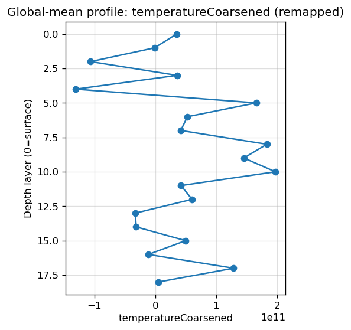
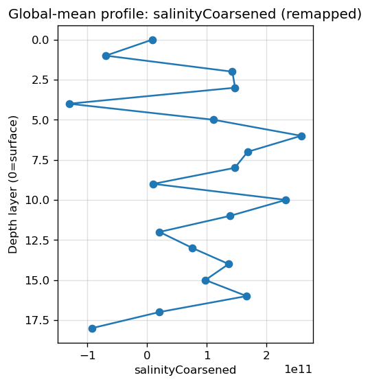
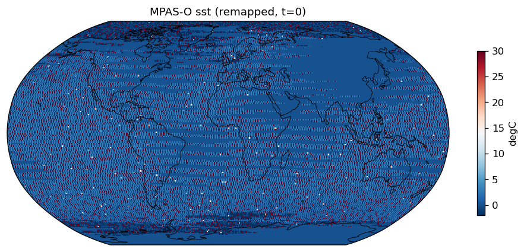
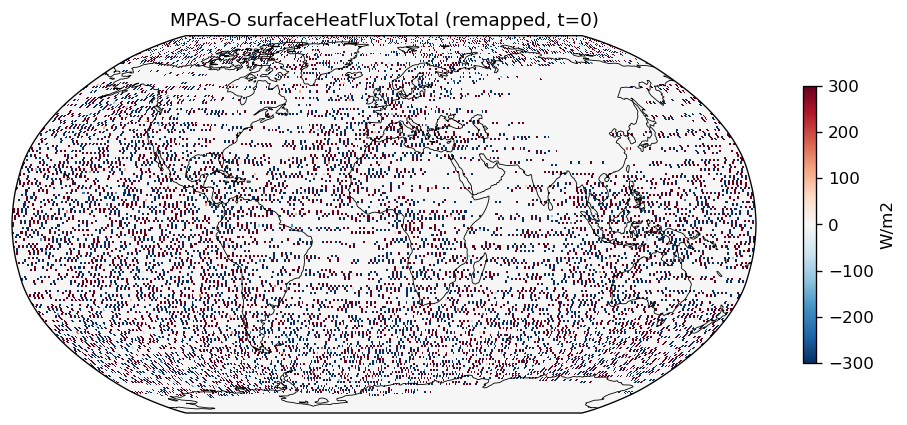
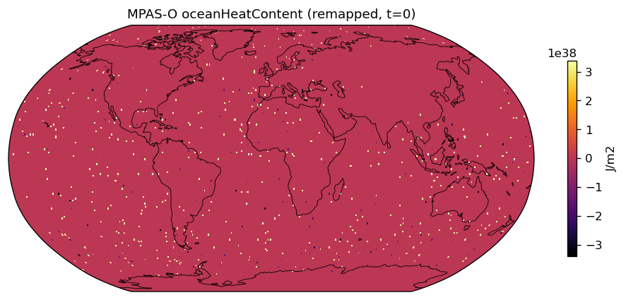
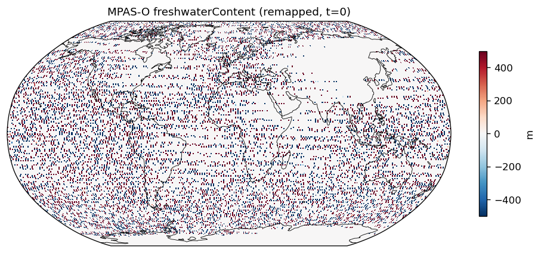
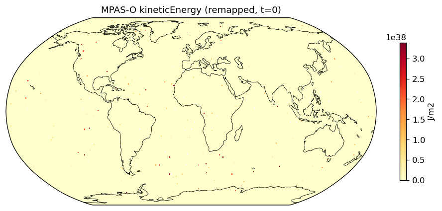
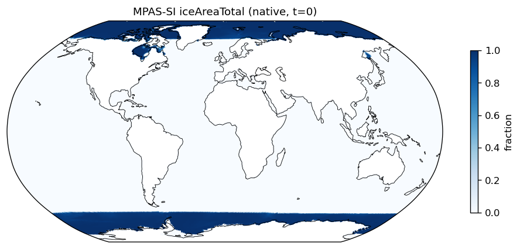
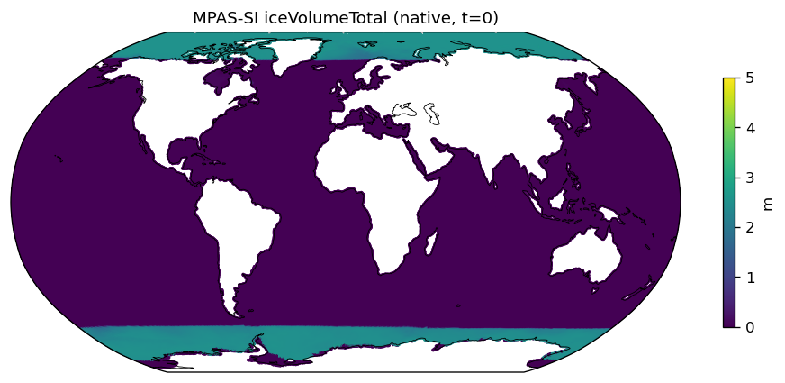
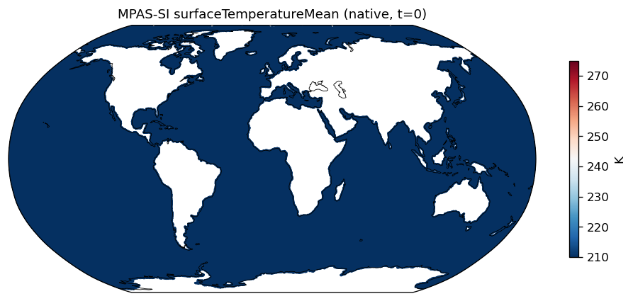
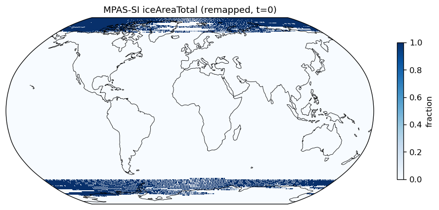
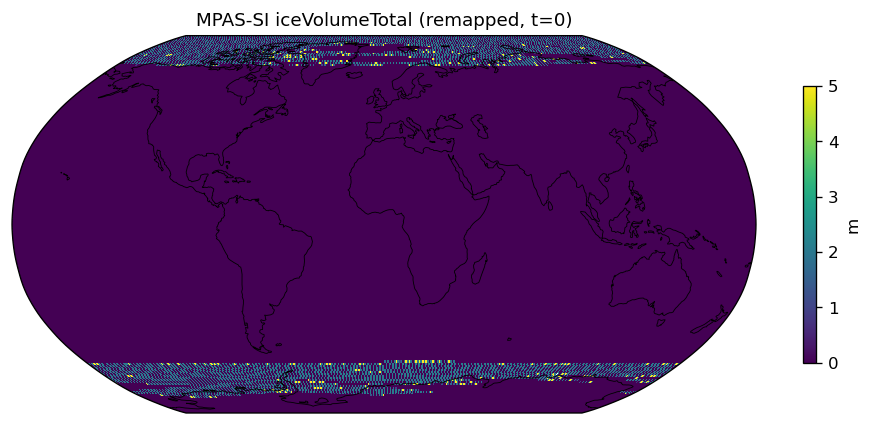
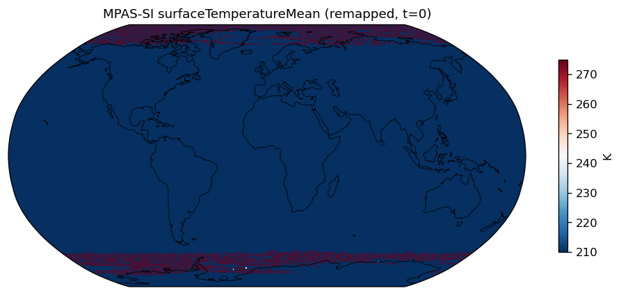
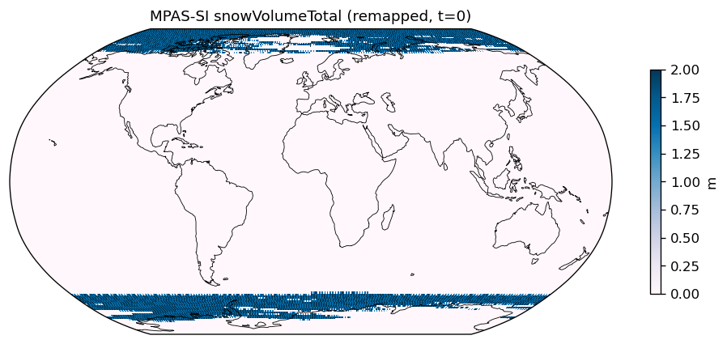
***** GLOBAL STATISTICS ( 512 MPI TASKS) *****
name on processes threads count walltotal wallmax (proc thrd ) wallmin (proc thrd )
"CPL:INIT" - 512 512 5.120000e+02 3.739056e+04 73.116 ( 487 0) 72.930 ( 127 0)
"CPL:cime_pre_init1" - 512 512 5.120000e+02 1.247023e+03 2.522 ( 487 0) 2.337 ( 127 0)
"CPL:mpi_init" - 512 512 5.120000e+02 1.018568e+03 2.076 ( 483 0) 1.890 ( 64 0)
"CPL:ESMF_Initialize" - 512 512 5.120000e+02 6.010324e-01 0.002 ( 286 0) 0.000 ( 128 0)
"CPL:cime_pre_init2" - 512 512 5.120000e+02 1.187480e+02 0.235 ( 494 0) 0.229 ( 368 0)
"CPL:seq_infodata_init" - 512 512 5.120000e+02 1.750756e+01 0.071 ( 401 0) 0.007 ( 494 0)
"CPL:seq_timemgr_clockInit" - 512 512 5.120000e+02 3.112554e+00 0.009 ( 505 0) 0.002 ( 169 0)
"CPL:cime_init" - 512 512 5.120000e+02 3.602413e+04 70.362 ( 305 0) 70.358 ( 465 0)
"CPL:init_comps" - 512 512 5.120000e+02 3.084879e+04 60.256 ( 122 0) 60.239 ( 511 0)
"CPL:comp_init_pre_all" - 512 512 5.120000e+02 1.669507e-01 0.002 ( 303 0) 0.000 ( 454 0)
"comp_init_cc_iac" - 512 512 5.120000e+02 2.062275e+00 0.006 ( 447 0) 0.003 ( 496 0)
"z_i:comp_init" - 512 512 5.120000e+02 5.681493e-01 0.002 ( 52 0) 0.000 ( 235 0)
"CPL:comp_init_cc_atm" - 512 512 5.120000e+02 1.446850e+04 28.259 ( 363 0) 28.259 ( 384 0)
"a_i:comp_init" - 512 512 1.024000e+03 1.611165e+04 31.524 ( 381 0) 31.369 ( 129 0)
"a_i:cam_init" - 512 512 5.120000e+02 1.435865e+04 28.046 ( 130 0) 28.042 ( 270 0)
"a_i:cam_initfiles_open" - 512 512 5.120000e+02 7.290612e+01 0.144 ( 259 0) 0.141 ( 327 0)
"a_i:cam_initial" - 512 512 5.120000e+02 2.340011e+03 4.571 ( 188 0) 4.569 ( 152 0)
"a_i:dyn_init1" - 512 512 5.120000e+02 6.027227e+01 0.122 ( 305 0) 0.111 ( 338 0)
"a_i:hycoef_init" - 512 512 5.120000e+02 1.064723e+01 0.024 ( 289 0) 0.017 ( 95 0)
"a_i:prim_init1" - 512 512 5.120000e+02 4.064328e+01 0.086 ( 178 0) 0.073 ( 456 0)
"a_i:repro_sum_finalsum" - 512 512 4.505600e+04 1.615520e-02 0.000 ( 156 0) 0.000 ( 314 0)
"a_i:compose_init" - 512 512 5.120000e+02 9.125530e+00 0.021 ( 273 0) 0.015 ( 64 0)
"a_i:sl_init1" - 512 512 5.120000e+02 2.551499e+00 0.010 ( 264 0) 0.002 ( 506 0)
"a_i:phys_grid_init" - 512 512 5.120000e+02 1.245240e+01 0.031 ( 338 0) 0.020 ( 263 0)
"a_i:initial_conds" - 512 512 5.120000e+02 2.230956e+03 4.371 ( 79 0) 4.344 ( 403 0)
"a_i:PIO:initdecomp" - 512 512 3.072000e+03 2.201741e+01 0.045 ( 3 0) 0.042 ( 141 0)
"a_i:PIO:PIOc_initdecomp" - 512 512 3.072000e+03 2.196260e+01 0.045 ( 3 0) 0.042 ( 141 0)
"a_i:dyn_init2" - 512 512 5.120000e+02 2.947287e+01 0.069 ( 400 0) 0.051 ( 15 0)
"a_i:prim_init2" - 512 512 5.120000e+02 2.639779e+01 0.063 ( 400 0) 0.047 ( 128 0)
"a_i:phys_init" - 512 512 5.120000e+02 1.184326e+04 23.136 ( 395 0) 23.126 ( 265 0)
"a_i:rad_cnst_init" - 512 512 5.120000e+02 4.515457e+02 0.883 ( 215 0) 0.880 ( 82 0)
"a_i:solar_data_init" - 512 512 5.120000e+02 2.729377e+01 0.053 ( 114 0) 0.053 ( 410 0)
"a_i:chem_init" - 512 512 5.120000e+02 7.814468e+03 15.265 ( 319 0) 15.261 ( 312 0)
"a_i:prescribed_volcaero_init" - 512 512 5.120000e+02 1.693400e-04 0.000 ( 320 0) 0.000 ( 2 0)
"a_i:init_ocean_data" - 512 512 5.120000e+02 2.876068e+01 0.060 ( 182 0) 0.055 ( 401 0)
"a_i:radiation_init" - 512 512 5.120000e+02 2.049514e+02 0.418 ( 393 0) 0.380 ( 47 0)
"a_i:tropopause_init" - 512 512 5.120000e+02 2.307609e+02 0.895 ( 95 0) 0.022 ( 41 0)
"CPL:comp_init_cc_lnd" - 512 512 5.120000e+02 8.500137e+03 16.602 ( 300 0) 16.602 ( 99 0)
Generated by verify_fme_output.py
{kind=link}
{kind=link}
{kind=link}
{kind=link}
{kind=link}
{kind=link}
{kind=link}
{kind=link}
{kind=link}
{kind=link}
{kind=link}
{kind=link}
{kind=link}
{kind=link}
{kind=link}
{kind=link}
{kind=link}
{kind=link}
{kind=link}
{kind=link}
{kind=link}
{kind=link}
{kind=link}